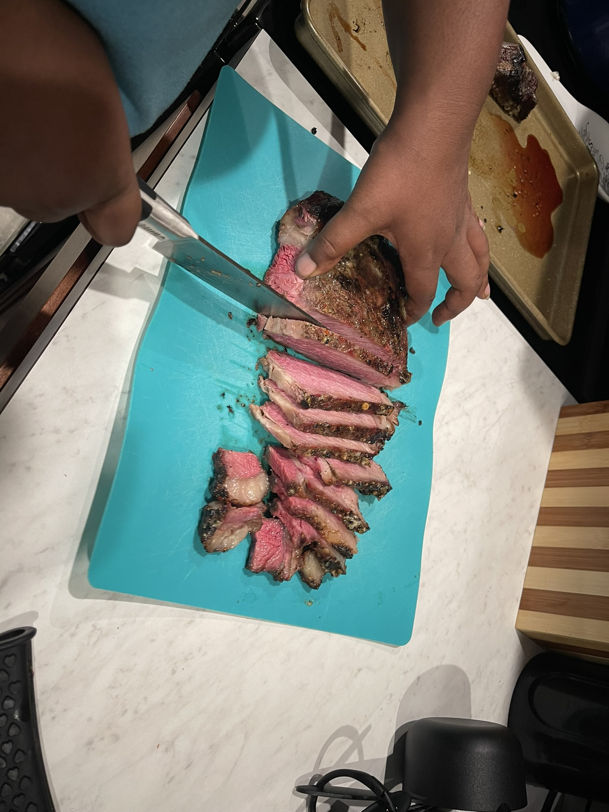

Classic Texas Brisket
- Rub: Salt, pepper, garlic powder
- Smoke Temp: 225°F
- Time: 10–12 hours
Trim the brisket, apply rub, and let it sit overnight. Smoke fat side up, spritz with apple cider vinegar every few hours. Wrap in butcher paper at the stall (~160°F internal). Rest for 1 hour before slicing.
